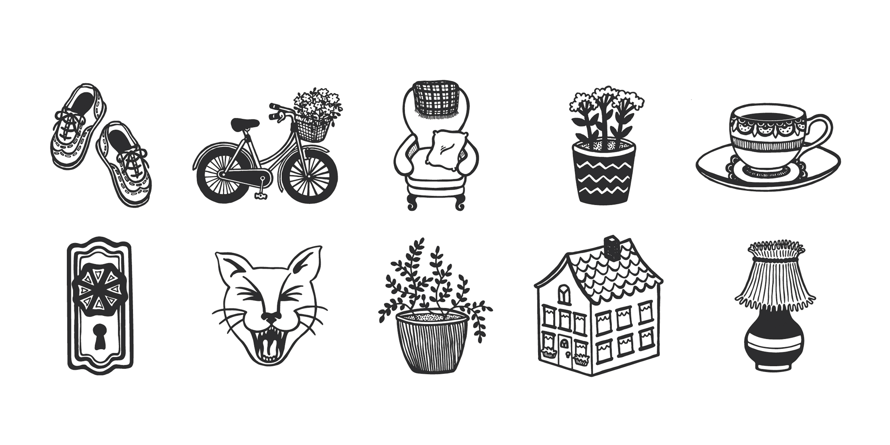
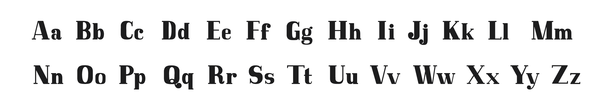

<div class="portfolio island">
        <div class="grid">
            <div class="portfolio-full unit unit-xs-1 unit-s-1 unit-m-1 unit-l-2-3">
                
            </div>
            <div class="portfolio-full-info island-2 unit unit-xs-1 unit-s-1 unit-m-1 unit-l-1-3">
                <h1>The Greatest (For John)</h1>
                <p> This series was designed as a glyph set to accompany an origianl font, Mod-Ish. However, the series could also work nicely as an icon or sticker set. </p>
            </div>
            <div class="mod-ish island-2">
                <h3>Mod-Ish Font Design</h3>
                 
            </div>
        </div>
    </div>